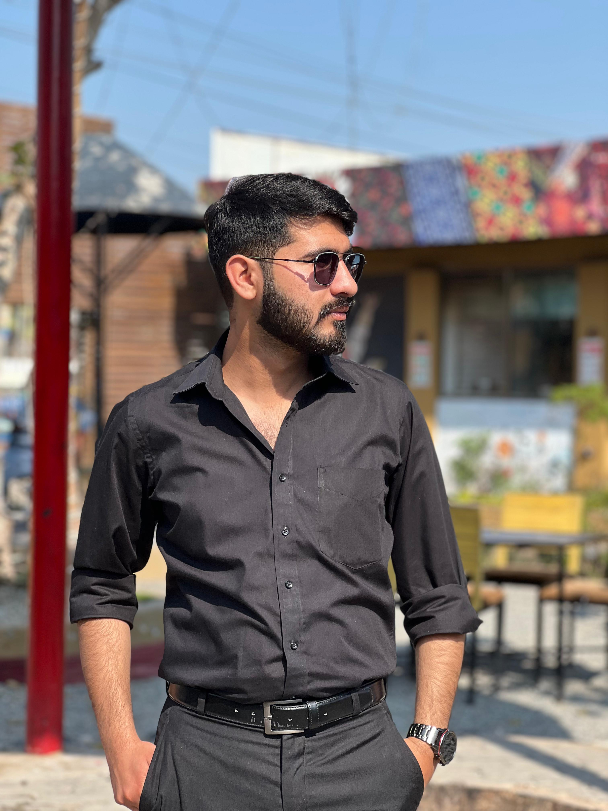

Sufian Naveed

Professional Summary:
Motivated BBA student (CGPA 3.91) with strong academic performance and hands-on experience in accounting, digital media, and content creation. Skilled in MS Office, Peachtree Accounting Software, and creative tools including Canva and Adobe Illustrator. Currently enhancing technical expertise through a Full Stack Web Development course and Civil Defense Resilience Program. Recognized for leadership and community service through contributions in university societies and civic engagement programs.
Education:
- Bachelor of Business Administration (BBA) – GIFT University, Gujranwala | 4th Semester Completed | Current CGPA: 3.91
- Intermediate (F.Sc Pre-Engineering) – B.I.S.E Gujranwala, 2019 | 906/1100 (82.36%)
- Matriculation (Science) – B.I.S.E Gujranwala, 2017 | 1034/1100 (94%)
Work Experience:
- Computer Operator – Pharmacy
2.5 Years
- Assistant Accountant – Industry
6 Months
- Supported bookkeeping and financial reporting using Peachtree Accounting Software.
- Assistant Graphic Designer – Local Market
1 Year
Skills:
- Business & Accounting: Peachtree Accounting, MS Excel, Financial Reporting
- Software & Tools: MS Office (Word, Excel, PowerPoint), Canva, Adobe Illustrator
- Creative & Media: Video Editing (CapCut, CapCut Pro), Social Media Content Creation
- Technical (Learning): Full Stack Web Development
Certifications and Programs
- Civil Defense Resilience Program – Government of Pakistan (Ongoing)
- Full Stack Web Development (Online Course – In Progress)
- Certificate of Appreciation – Media Executive Member, GEMS Society, GIFT University
- Civic & Community Engagement Course – Flood Relief & Rescue 1122
Other:
© Sufian Naveed. All right reserved.